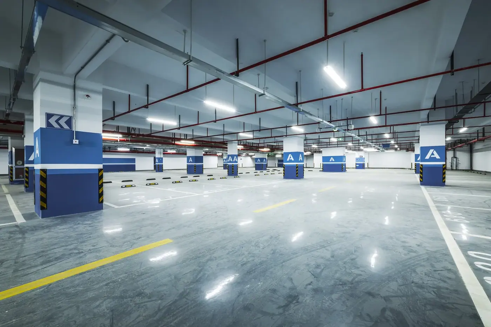

Betongrehabilitering
Reparasjon av karbonatisert og kloridskadet betong – frimeisling, sandblåsing, armeringsbehandling, spesialmørtel og slamming.
Vi er spesialister på reparasjon og beskyttelse av betongkonstruksjoner. Siden 1984 har vi levert tekniske løsninger til tunge aktører i bransjen.
Belegg · armering · betong

Vi leverer løsninger for krevende miljøer og lang levetid – fra reparasjon av skadet betong til belegg som tåler tung trafikk.
Reparasjon av karbonatisert og kloridskadet betong – frimeisling, sandblåsing, armeringsbehandling, spesialmørtel og slamming.
Polyuretanbaserte membransystemer med riss-overbyggende egenskaper og høy slitestyrke.
Herdeplastbelegg i epoxy, polyuretan og acryl – for verksteder og næringsmiddelindustri.
Vi ser på skaden: karbonatisering, klorider eller slitasje – og hva som må gjøres.
Frimeisling, sandblåsing, armeringsbehandling og spesialmørtel. Avsluttes med karbonatiseringsbrems.
Belegg eller membran som beskytter konstruksjonen og tåler belastningen den utsettes for.
Vi jobber med rådgivere, entreprenører og eiendomsforvaltere som stiller høye krav til kvalitet, dokumentasjon og gjennomføring.